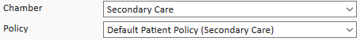
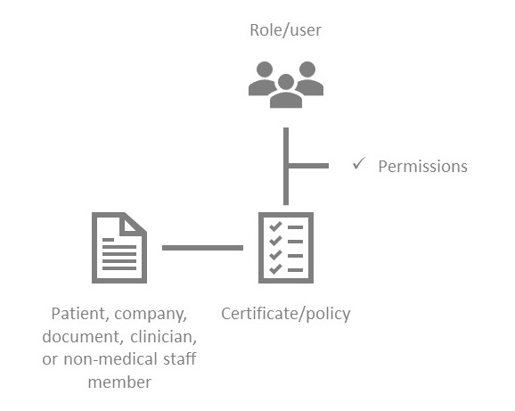
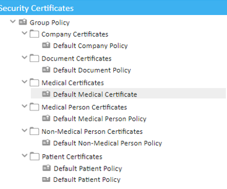
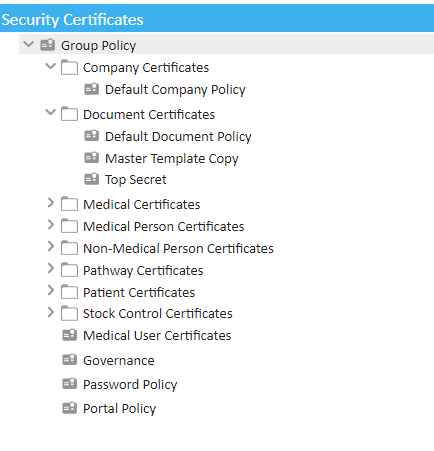
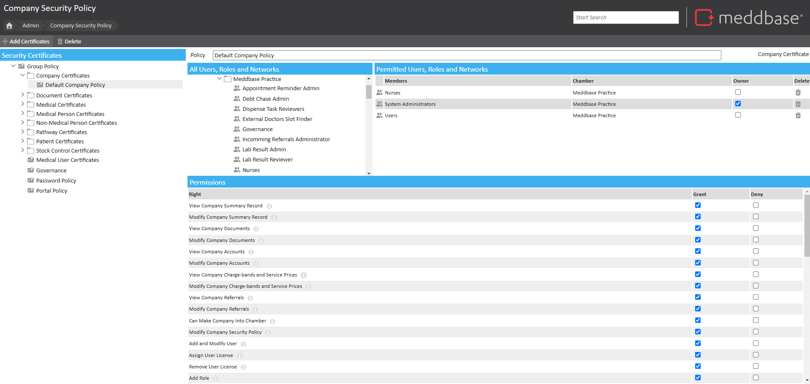
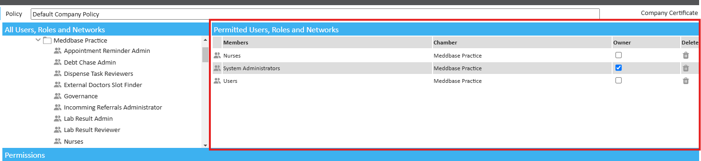
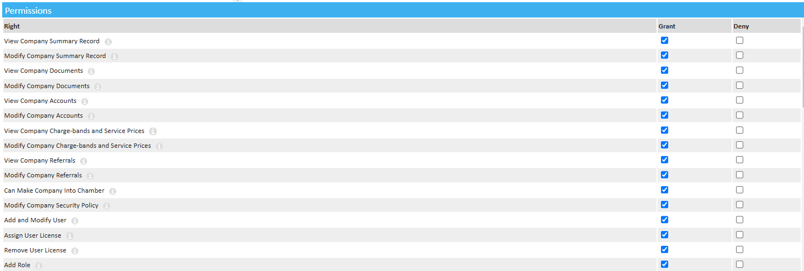
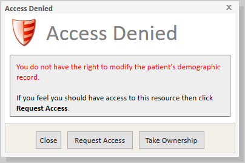
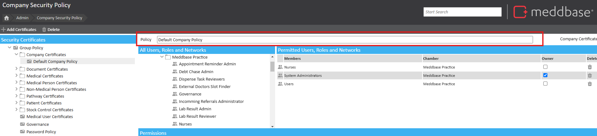
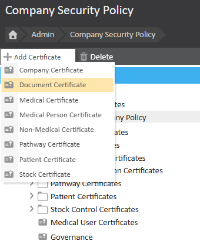

Security Policies play a critical role in protecting data within Meddbase by defining role-based or individual user access across the system. Each policy type, also known as a certificate, controls a specific set of user permissions.
These permissions define if and how users or Role Groups interact with protected data, such as a Company Policy securing a company record or a Patient Policy securing patient records.
Effective security policy configuration is essential, as it establishes the boundaries for user actions within the chamber, ensuring that access aligns with privacy and security requirements.
This article explains security policies, permissions, access-denied messages and how to troubleshoot them.
You may have noticed that when adding a patient in Meddbase, you are given the option to set a 'policy' (also known as a 'certificate'). You are given a similar option whenever you add a company, document, clinician, or non-medical staff member to Meddbase.

The policy you select defines what actions different users can and can't perform with that entity, i.e patient, company, document, clinician, or non-medical staff member. For example, the policy might define that doctors can view and edit the patient's medical record, but receptionists can only view the patient's demographic data.
There are 6 types of certificates that protect each main entity within the system. Each certificate contains a policy that specifies the permissions associated with it.
To learn more about each individual policy, please click on the relevant certificate.

From the Start Page click Admin > Security Policy.

Each entity type in Meddbase has one or more certificates (policies) associated with it. You can see which certificates an entity type has by clicking the v icon next to each one:

Each certificate defines what different users or role groups can do with the patient, company, document, clinician, or non-medical staff member assigned to it. Click on a certificate to see permitted users and permissions.

Each certificate has an owner, which by default is the System Administrators role group. The owner is who will receive any requests for permissions. There must be at least one certificate owner, you are able to have many.

Click on a user or role group within the Permitted Users, Roles and Networks column to see what permissions they have for that certificate.

Permissions can be granted, explicitly denied, or neither granted or denied.
If a permission is granted, it means the user or role group has the right to perform that action. If a permission is denied, the user or role group will sees a message like the following when they attempt to perform the action:

This means that the permission is denied, either for them as an individual or for a role group they belong to. For example, this message will appear when a user without the right to modify patient demographics attempts to change a patient's details.
If a permission is neither granted nor denied, it will be denied, unless it is granted for another role group the user belongs to.
In order to reman a policy (certificate) navigate to the 'Security Policy' page (Start Page > Admin > Security Policy) and find the policy you are looking to rename, click on it and bring up the policy details.
In the top left corner, you will find a box labelled 'Policy'. Change the name of your policy here. Any changes will be saved automatically.

In addition to the default security policies, it is possible to create additional security policies to further restrict access to entities within the system. For example, multiple document policies can be established to restrict access to different documents for only certain users, ensuring that sensitive information is only available to those who need it. These customised policies allow administrators to tailor access controls according to specific organisational needs or compliance requirements.
In order to create a new policy (certificate) for a user or role, navigate to 'Security Policy' page (Start Page > Admin > Security Policy) and click the 'Add Certificates' button.

You will be prompted to choose which certificate type you would like to add, select the type and your new certificate will be created.
In order to remove a policy (certificate) navigate to the 'Security Policy' page (Start Page > Admin > Security Policy) and find the policy you are looking to remove, click on it and bring up the policy details.
With the policy highlighted, click the 'Delete' button on the top bar - you will be prompted to confirm this action. Confirming will proceed with the action.
Please be aware that once a policy is deleted, it cannot be restored and will instead need to be recreated.
When a user is presented with an "Access Denied" message, they have an option to Request Access if they believe they should have access to the resource.
What happens if a user clicks 'request access'?
If a user clicks 'request access':
If access is granted, the individual will be added to the certificate's list of permitted users and the relevant permission will be granted.
If you or a user in your organisation is receiving an access denied message, but you're not sure how to rectify this, please raise a support request with the following information included:
When I click 'request access', I get the following error message: 'cross-company access denied'.
It's likely that the security certificate you are requesting access to belongs to a different chamber. Please raise a support request with the above information included (the username, error message, and steps to produce the message)